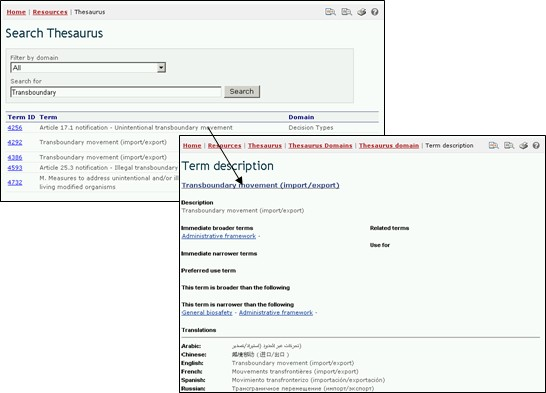

Тезаурус или «контролирующие словари» представляет перечень установленных терминов и соответствующих синонимов, применяемых в определенном контексте. Эти термины используются при вводе и поиске информации в базах данных МПБ.

Figure 46
Figure 47
Ссылка Тезаурус на странице Ресурсы выводит на страницу Поиск в тезаурусе, которая содержит выпадающее меню предметной области терминов и окно для ввода ключевых слов для поиска. Пользователь может указать предметную область термина и(или) интересующее ключевое слово (слова) и осуществить поиск, нажав кнопку Search (поиск).
Выбор только определенной предметной области предоставляет в алфавитном порядке полный список терминов, используемых в данной категории информации.
Список полученных результатов содержит колонку Term ID (идентификатор термина) для получения дополнительной информации об использовании данного термина Центральным порталом МПБ. Эта ссылка выводит на запись Описание термина, в которой приводится подробная информация о значении данного термина, его использование Центральным порталом МПБ, включая более широкое, более узкое и предпочитаемое использование термина и его перевод на шесть языков ООН.

Figure 48
Пример: Если пользователь желает понять использование термина «transboundary» (трансграничный) в рамках деятельности, связанной с Протоколом, то необходимо указать предметную область термина All (все) в меню Filter by domain (Выбрать предметную область) и «transboundary» в окне ключевых слов на странице Поиск Тезауруса. Нажатие кнопки Search (поиск) выведет перечень записей, описывающих использование термина «трансграничный» Центральным порталом МПБ в различных категориях информации. Поиск результатов (в январе 2008) идентифицирует пять использований данного термина в четырех категориях информации МПБ.

Figure 49
В описании термина, его характеристика «предпочитаемый термин» (Preferred use term) означает, что данный термин выбран среди остальных его синонимов, для использования в целях индексации и поиска информации. Например, для кукурузы термин maize является предпочтительным термину corn в базах данных МПБ.